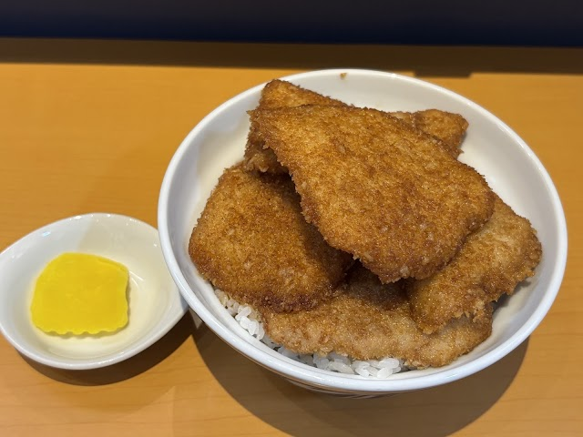
| 営業時間 | 月・火・金 11:30〜14:00, 17:00〜19:30 ／ 土・日 11:30〜14:30, 17:00〜19:30 |
|---|---|
| 定休日 | 水・木曜 |
| 住所 | 新潟県新潟市中央区古町通６番町９７３ |
| 予約 | 可 — ☎ 025-222-0097 ／ 公式サイト |
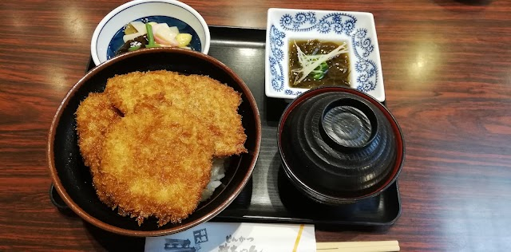
| 営業時間 | 火・水・木・金・土・日 11:00〜15:00, 17:00〜21:00 |
|---|---|
| 定休日 | 月曜 |
| 住所 | 新潟県新潟市中央区沼垂東５丁目１２−１ |
| 予約 | 可 — ☎ 025-245-2994 ／ 公式サイト |
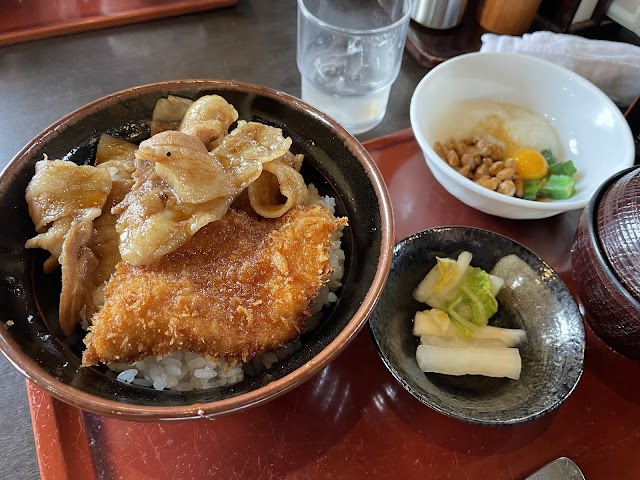
| 営業時間 | 月・水・木・金・土・日 11:00〜21:30 |
|---|---|
| 定休日 | 火曜 |
| 住所 | 新潟県新潟市西区寺尾朝日通１１−９ |
| 予約 | 可 — ☎ 025-265-6639 ／ 公式サイト |
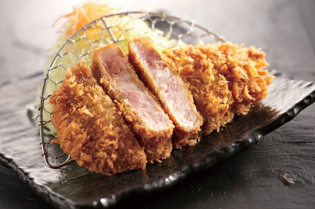
| 営業時間 | 月・火・水・木・金 11:00〜15:00, 17:00〜21:00 ／ 土・日 11:00〜21:00 |
|---|---|
| 定休日 | なし(要最終確認) |
| 住所 | 新潟県新潟市南区茨曽根２８９７ |
| 予約 | 可 — ☎ 050-5484-6294 ／ 公式サイト |
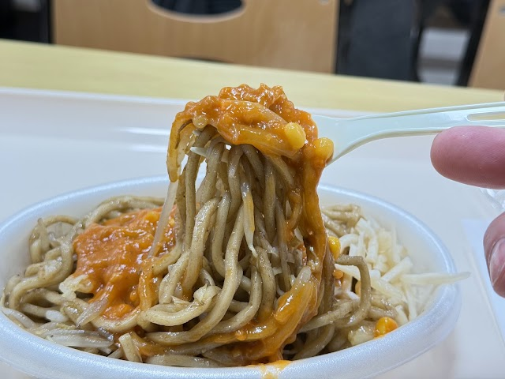
| 営業時間 | 月・火・水・木・金・土・日 10:00〜20:00 |
|---|---|
| 定休日 | なし(要最終確認) |
| 住所 | 新潟県新潟市中央区万代１丁目６−１ 万代シテイバスセンタービル ２階 |
| 予約 | 要確認 — ☎ 025-241-5928 ／ 公式サイト |
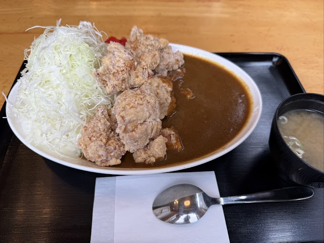
| 営業時間 | 月・火・水・木・金 11:00〜15:00, 17:30〜21:00 ／ 土・日 11:00〜15:00, 17:00〜21:00 |
|---|---|
| 定休日 | なし(要最終確認) |
| 住所 | 新潟県新潟市東区はなみずき１丁目１５−２３ |
| 予約 | 要確認 — ☎ 050-5484-3679 ／ 公式サイト |
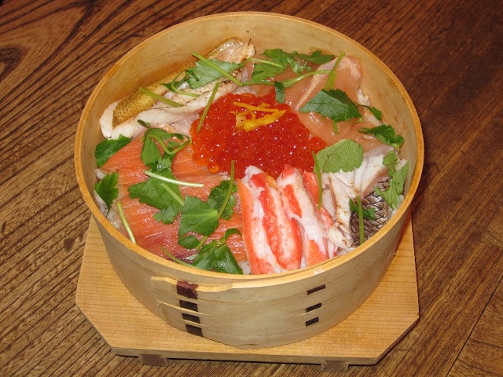
| 営業時間 | 月・水・木・金・土・日 11:30〜14:00, 17:00〜21:00 |
|---|---|
| 定休日 | 火曜 |
| 住所 | 新潟県新潟市中央区古町通９番町１４５７ |
| 予約 | 可 — ☎ 025-223-1266 ／ 公式サイト |
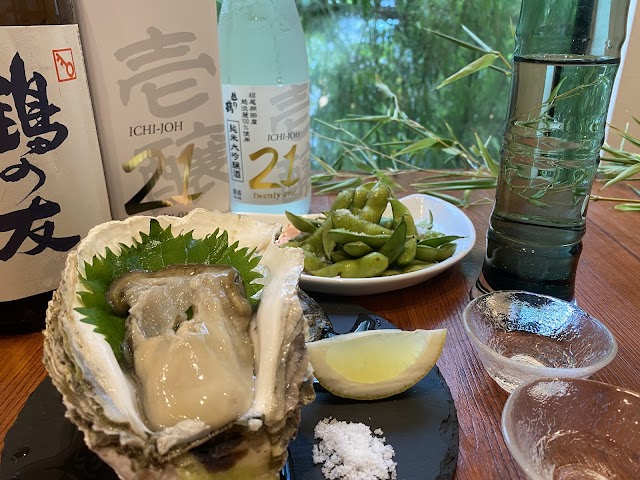
| 営業時間 | 月・火・水・木・金・土・日 17:00〜1:00 |
|---|---|
| 定休日 | なし(要最終確認) |
| 住所 | 新潟県新潟市中央区米山１丁目７−１９ |
| 予約 | 可 — ☎ 025-288-5840 ／ 公式サイト |
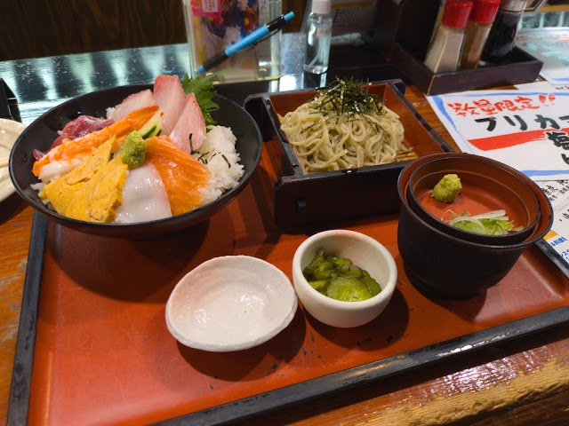
| 営業時間 | 火・水・木・金・土・日 11:00〜14:30, 17:00〜23:00 |
|---|---|
| 定休日 | 月曜 |
| 住所 | 新潟県新潟市江南区早苗２丁目１−４６ |
| 予約 | 可 — ☎ 025-381-1189 ／ 公式サイト |
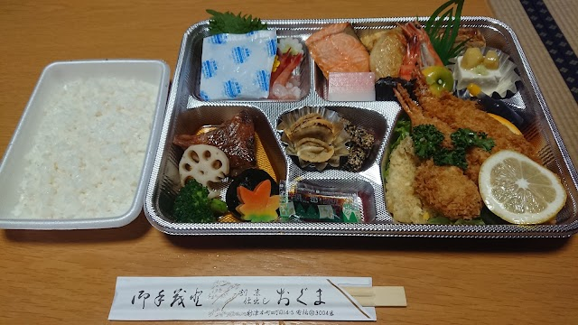
| 営業時間 | 月・火・木・金・土・日 10:00〜22:00 |
|---|---|
| 定休日 | 水曜 |
| 住所 | 新潟県新潟市秋葉区新津本町４丁目１４−５ |
| 予約 | 可 — ☎ 0250-22-3004 ／ 公式サイト |
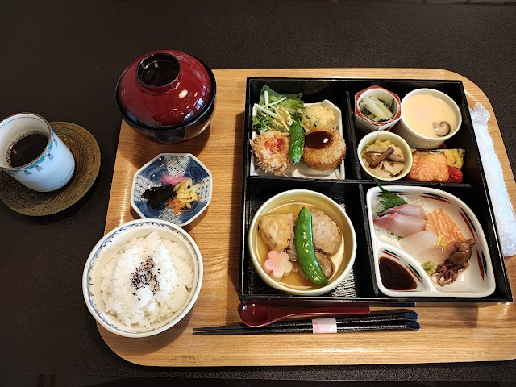
| 営業時間 | 月・火・木・金・土・日 11:30〜13:30, 16:00〜20:00 |
|---|---|
| 定休日 | 水曜 |
| 住所 | 新潟県新潟市北区嘉山１丁目２−１８ 割烹大倉屋 |
| 予約 | 可 — ☎ 025-387-2017 |
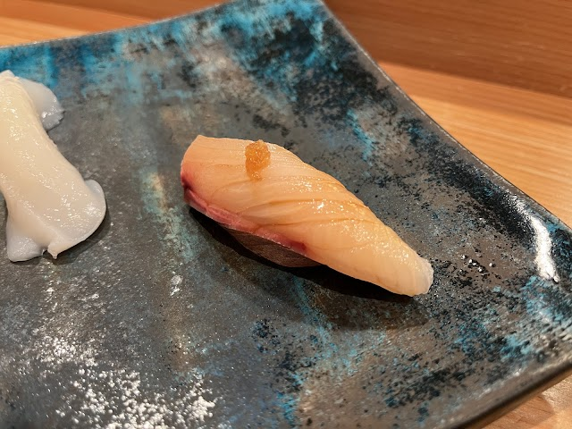
| 営業時間 | 月・火・水・木・金・土 17:00〜22:00 |
|---|---|
| 定休日 | 日曜 |
| 住所 | 新潟県新潟市中央区西堀通５番町833ｰ11 ベルクール 1F |
| 予約 | 可 — ☎ 025-229-3388 ／ 公式サイト |
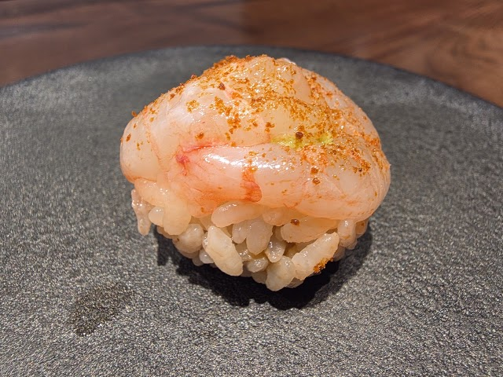
| 営業時間 | 木・金の昼12:00〜、夜18:00〜/19:00〜(土曜は17:30または20:30) |
|---|---|
| 定休日 | 土日祝(新潟店・本店は新発田で営業) |
| 住所 | 新潟県新潟市中央区本町通り７番町１１５１ 第一クレジットビル 1F |
| 予約 | 可 — ☎ 0254-22-3358 ／ 公式サイト |
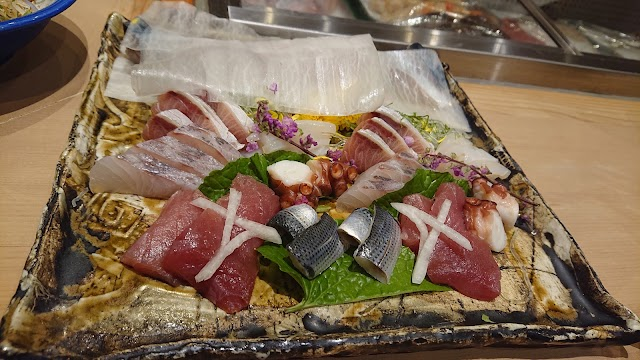
| 営業時間 | 月・木・金・土・日 11:30〜13:30 |
|---|---|
| 定休日 | 火・水曜 |
| 住所 | 新潟県新潟市中央区本町通４番町２７３ |
| 予約 | 可 — ☎ 025-222-4613 ／ 公式サイト |
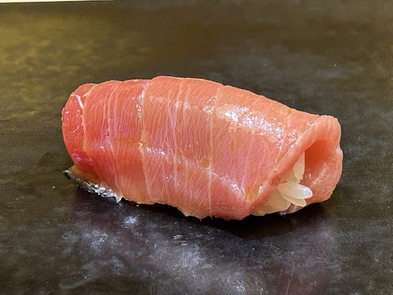
| 営業時間 | 月・火・水・木・金・土 17:30〜0:00 |
|---|---|
| 定休日 | 日曜 |
| 住所 | 新潟県新潟市中央区東堀通８番町１４２７−２ |
| 予約 | 可 — ☎ 025-224-9581 |
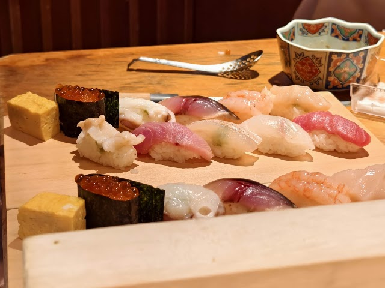
| 営業時間 | 月・火・水・木・金・土 11:30〜13:30, 16:30〜22:30 |
|---|---|
| 定休日 | 日曜 |
| 住所 | 新潟県新潟市中央区東大通１丁目５−２６ |
| 予約 | 可 — ☎ 050-5484-2455 ／ 公式サイト |
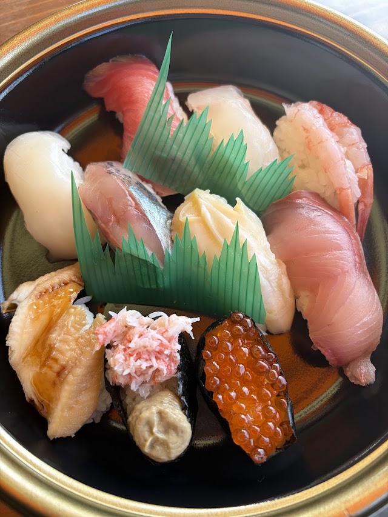
| 営業時間 | 月・火・水・木・金・土・日 10:30〜21:00 |
|---|---|
| 定休日 | なし(要最終確認) |
| 住所 | 新潟県新潟市中央区万代島２−４ |
| 予約 | 要確認 — ☎ 050-5485-1533 ／ 公式サイト |
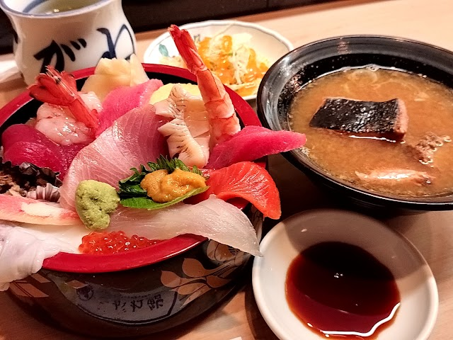
| 営業時間 | 火 11:00〜14:00 ／ 水・木・金・土 11:00〜14:00, 16:00〜19:30 ／ 日 11:00〜19:30 |
|---|---|
| 定休日 | 月曜 |
| 住所 | 新潟県新潟市東区紫竹５丁目１−１ |
| 予約 | 可 — ☎ 025-246-0032 ／ 公式サイト |
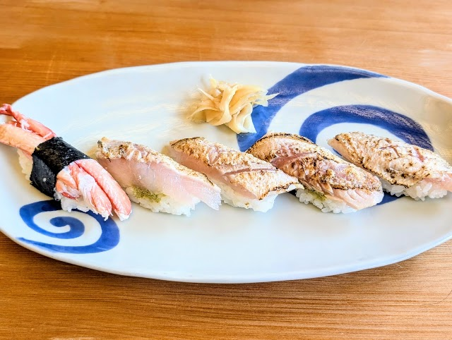
| 営業時間 | 火・水・木・金・土・日 11:30〜13:00, 17:00〜22:00 |
|---|---|
| 定休日 | 月曜 |
| 住所 | 新潟県新潟市西区寺地５０９−５ |
| 予約 | 可 — ☎ 025-231-4355 ／ 公式サイト |
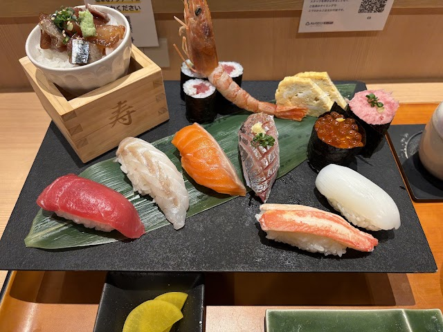
| 営業時間 | 月・火・水・木・金 7:00〜10:00, 11:00〜14:00 ／ 土 7:00〜14:00 |
|---|---|
| 定休日 | 日曜 |
| 住所 | 新潟県新潟市江南区茗荷谷７１１ 中央卸売市 |
| 予約 | 要確認 — ☎ 025-257-2308 ／ 公式サイト |
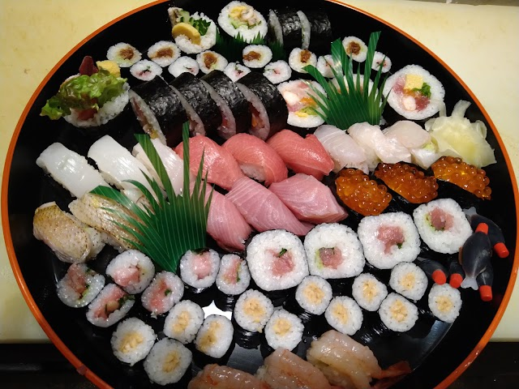
| 営業時間 | 月・火・木・金・土・日 11:30〜15:00, 17:30〜22:30 |
|---|---|
| 定休日 | 水曜 |
| 住所 | 新潟県新潟市南区親和町１−１５ |
| 予約 | 可 — ☎ 025-373-2302 ／ 公式サイト |
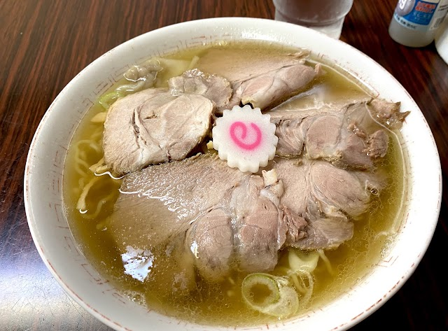
| 営業時間 | 月・水・木・金・土・日 11:00〜15:00 |
|---|---|
| 定休日 | 火曜 |
| 住所 | 新潟県新潟市中央区西堀通５番町５−８２９ |
| 予約 | 要確認 — ☎ 025-222-8227 |
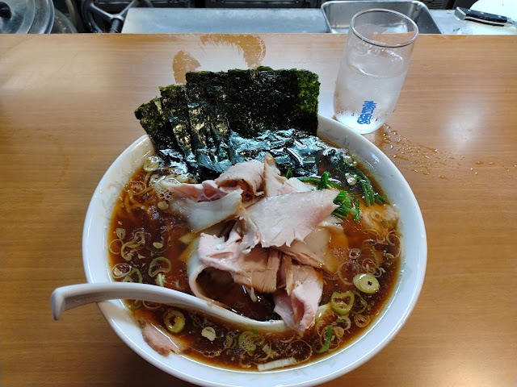
| 営業時間 | 月・火・木・金・土・日 11:00〜14:00, 17:00〜19:00 |
|---|---|
| 定休日 | 水曜 |
| 住所 | 新潟県新潟市中央区万代島７−１ |
| 予約 | 要確認 — ☎ 025-243-9803 ／ 公式サイト |
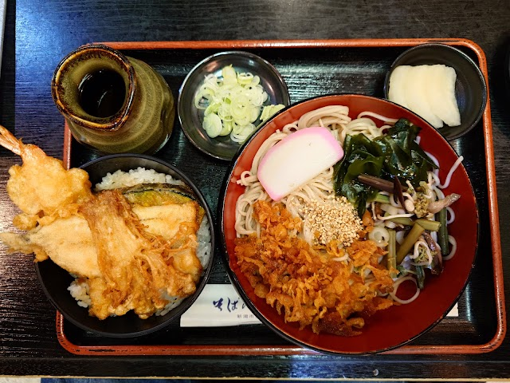
| 営業時間 | 月 11:00〜16:00 ／ 火・水・木・金・土・日 11:00〜21:00 |
|---|---|
| 定休日 | なし(要最終確認) |
| 住所 | 新潟県新潟市中央区古町通６番町９７４ |
| 予約 | 要確認 — ☎ 025-222-3027 |
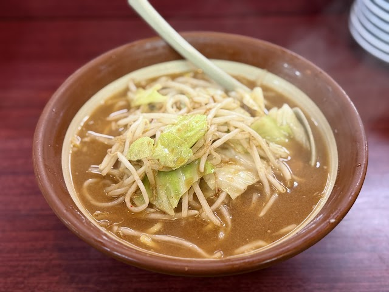
| 営業時間 | 月・火・水・金 11:00〜14:30 ／ 土・日 11:00〜15:00 |
|---|---|
| 定休日 | 木曜 |
| 住所 | 新潟県新潟市西蒲区竹野町２４５４−１ |
| 予約 | 要確認 — ☎ 0256-72-2827 ／ 公式サイト |
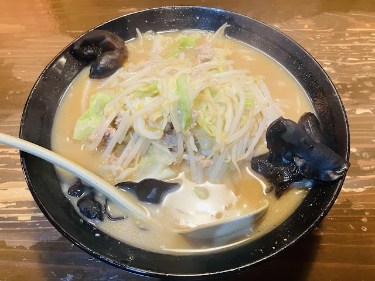
| 営業時間 | 火・水・木・金・土・日 11:00〜13:45, 17:30〜20:30 |
|---|---|
| 定休日 | 月曜 |
| 住所 | 新潟県新潟市北区葛塚３３２５−２ 麺東光 |
| 予約 | 要確認 — ☎ 025-386-7114 |
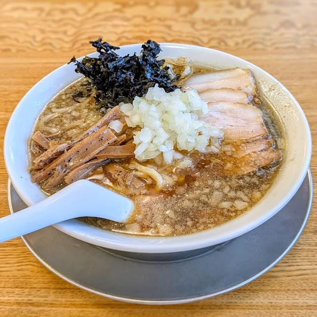
| 営業時間 | 月・火・水・木・金・土・日 10:00〜22:00 |
|---|---|
| 定休日 | なし(要最終確認) |
| 住所 | 新潟県新潟市東区中山６丁目２１−７２８−１ |
| 予約 | 要確認 — ☎ 050-8881-5160 ／ 公式サイト |
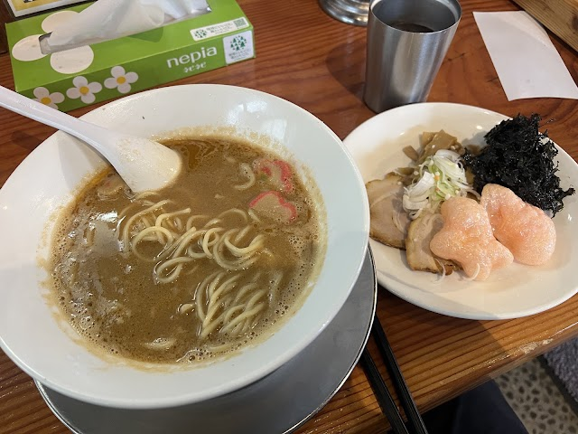
| 営業時間 | 月・火・木・金・土・日 11:00〜14:50, 17:00〜20:50 |
|---|---|
| 定休日 | 水曜 |
| 住所 | 新潟県新潟市東区松崎１丁目１−２８ |
| 予約 | 要確認 — ☎ 025-272-9260 ／ 公式サイト |
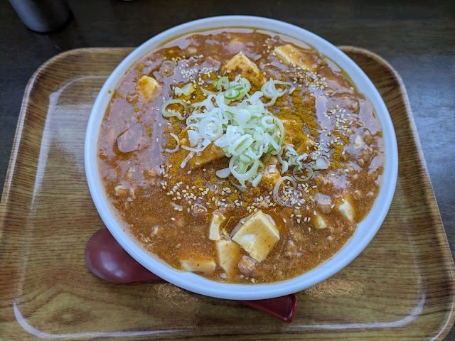
| 営業時間 | 火・水・木・金・土・日 11:00〜14:00 |
|---|---|
| 定休日 | 月曜 |
| 住所 | 新潟県新潟市江南区早通５丁目１−２ |
| 予約 | 要確認 — ☎ 025-381-8649 |
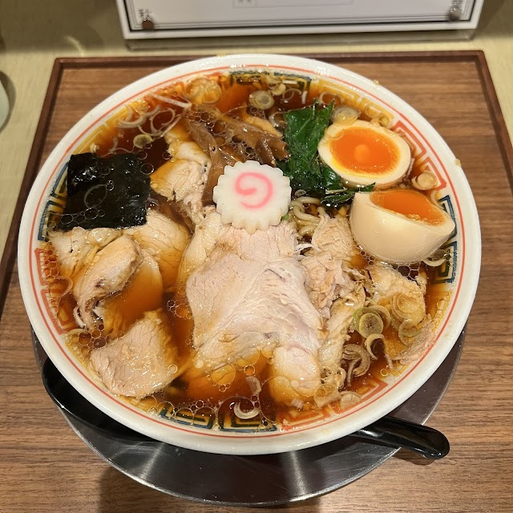
| 営業時間 | 月・火・水・木・金 10:00〜14:30, 17:00〜20:30 ／ 土・日 10:00〜20:30 |
|---|---|
| 定休日 | なし(要最終確認) |
| 住所 | 新潟県新潟市秋葉区車場４丁目２−１８ |
| 予約 | 要確認 — ☎ 050-8892-9552 ／ 公式サイト |
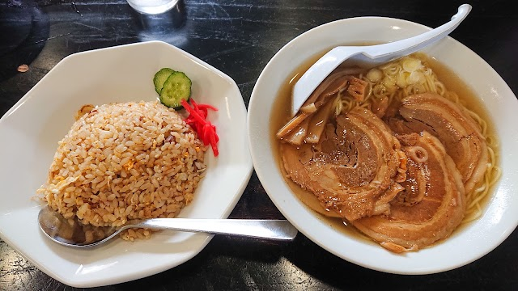
| 営業時間 | 月・火・水・木・金・土 11:00〜15:00, 17:30〜20:30 |
|---|---|
| 定休日 | 日曜 |
| 住所 | 新潟県新潟市西区寺尾東２丁目１５−２２ |
| 予約 | 要確認 — ☎ 025-378-1359 |
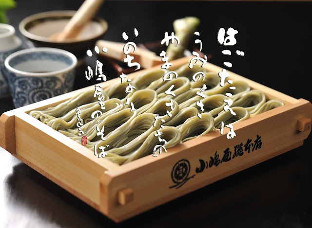
| 営業時間 | 月・火・水・木・金・土・日 11:00〜21:00 |
|---|---|
| 定休日 | なし(要最終確認) |
| 住所 | 新潟県新潟市西区小針３丁目１−１ |
| 予約 | 可 — ☎ 025-233-0033 ／ 公式サイト |
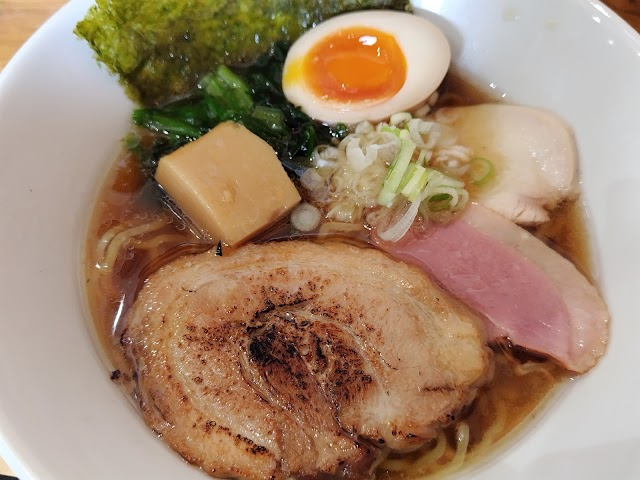
| 営業時間 | 月・火・木・金・土・日 11:30〜14:00, 17:00〜20:30 |
|---|---|
| 定休日 | 水曜 |
| 住所 | 新潟県新潟市南区大通黄金２丁目７−４ |
| 予約 | 要確認 — ☎ 025-201-6077 ／ 公式サイト |
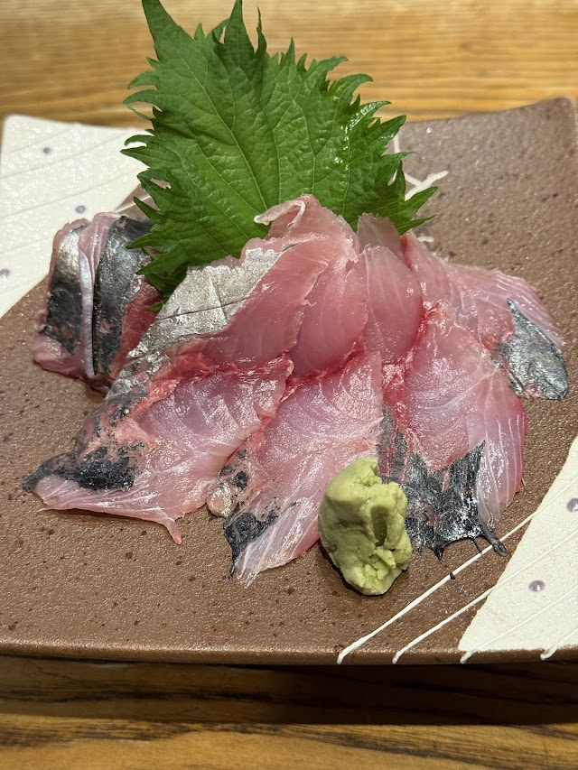
| 営業時間 | 月・火・水・木・金・土・日 11:30〜22:00 |
|---|---|
| 定休日 | なし(要最終確認) |
| 住所 | 新潟県新潟市中央区古町通７番町９９５−４ 第一坪田ビル |
| 予約 | 要確認 — ☎ 025-222-6245 ／ 公式サイト |
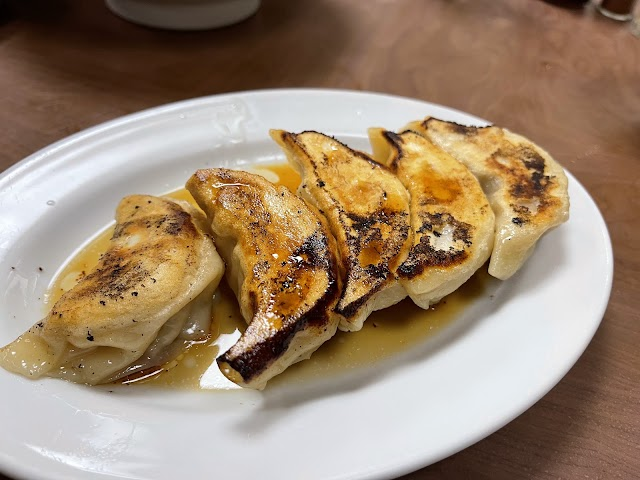
| 営業時間 | 月・火・水・木・金・土 17:30〜2:00 |
|---|---|
| 定休日 | 日曜 |
| 住所 | 新潟県新潟市中央区古町通１０番町１７２０ |
| 予約 | 可 — ☎ 025-224-9075 ／ 公式サイト |
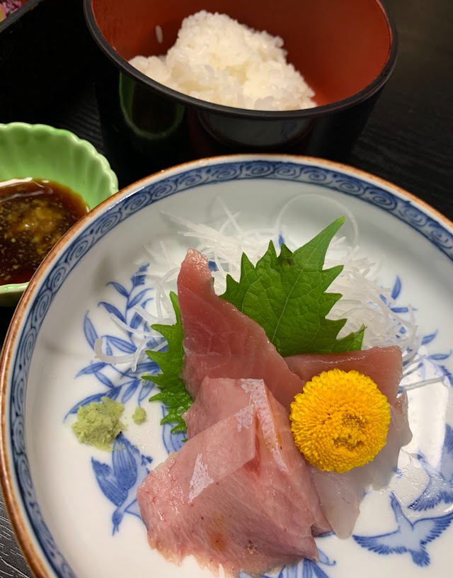
| 営業時間 | 月・火・水・木 16:30〜22:30 ／ 金・土 16:30〜23:30 |
|---|---|
| 定休日 | 日曜 |
| 住所 | 新潟県新潟市中央区沼垂東２丁目１０−７ |
| 予約 | 可 — ☎ 025-245-6789 ／ 公式サイト |
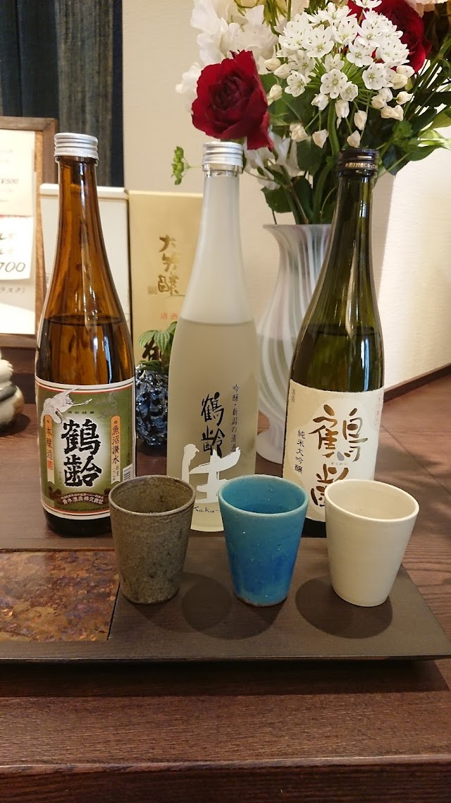
| 営業時間 | 月・火・水・木・金・土 8:30〜18:00 |
|---|---|
| 定休日 | 日曜 |
| 住所 | 新潟県新潟市中央区東堀通５番町４２５−４ |
| 予約 | 要確認 — ☎ 025-222-7877 ／ 公式サイト |
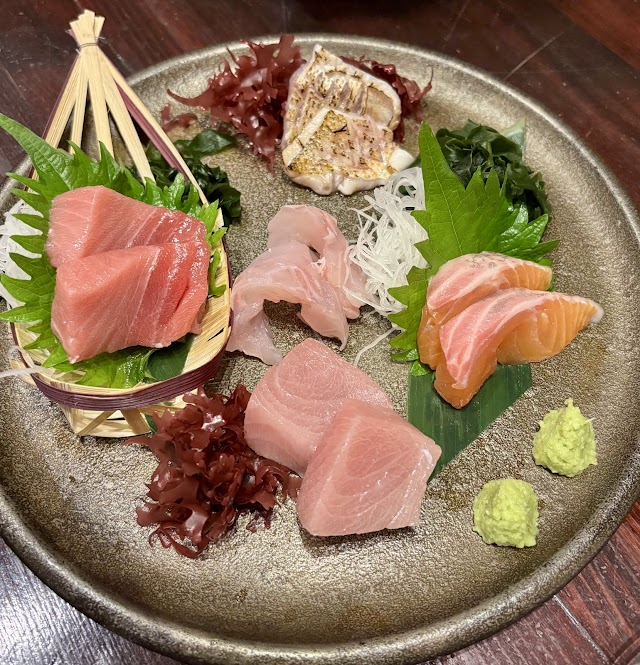
| 営業時間 | 月・火・水・木・金・土・日 16:30〜0:30 |
|---|---|
| 定休日 | なし(要最終確認) |
| 住所 | 新潟県新潟市中央区東大通２丁目１−７ 松屋ビル 1F |
| 予約 | 可 — ☎ 025-247-5106 ／ 公式サイト |
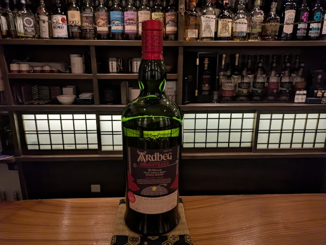
| 営業時間 | 月・火・水・木・金・土・日 19:00〜1:00 |
|---|---|
| 定休日 | なし(要最終確認) |
| 住所 | 新潟県新潟市中央区古町通９番町１４７６ |
| 予約 | 可 |
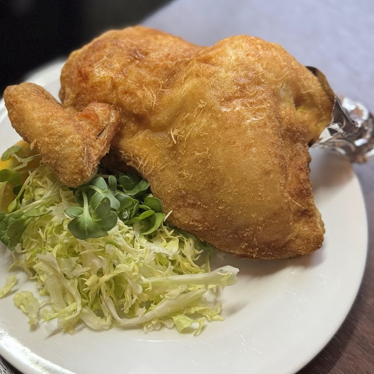
| 営業時間 | 火・水・木・金・土・日 16:30〜20:30 |
|---|---|
| 定休日 | 月曜 |
| 住所 | 新潟県新潟市中央区窪田町３丁目１９９ |
| 予約 | 可 — ☎ 025-223-5934 ／ 公式サイト |
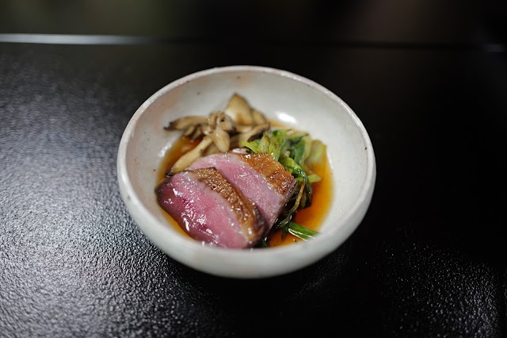
| 営業時間 | 完全予約制、昼夜通し営業（時間は要予約・要確認） |
|---|---|
| 定休日 | 不定休(要確認) |
| 住所 | 新潟県新潟市南区味方４０２ |
| 予約 | 可 — ☎ 025-373-4125 |
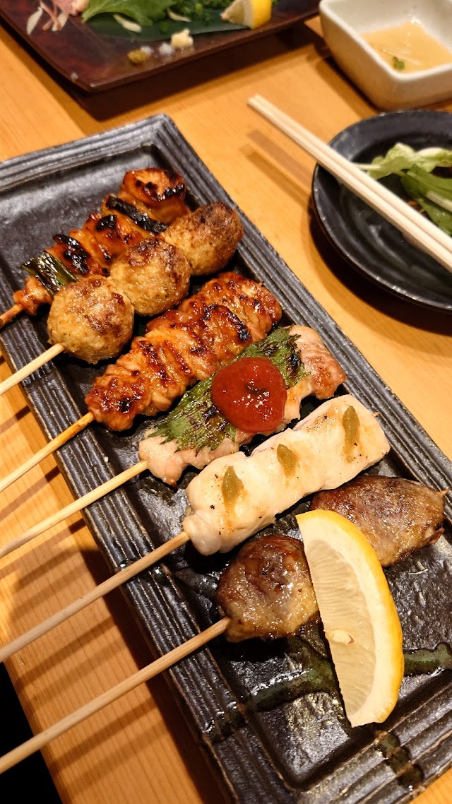
| 営業時間 | 月・火・水・木 17:00〜22:30 ／ 金・土 17:00〜23:30 ／ 日 11:30〜22:30 |
|---|---|
| 定休日 | なし(要最終確認) |
| 住所 | 新潟県新潟市秋葉区南町７２−４ |
| 予約 | 可 — ☎ 0250-21-2088 ／ 公式サイト |
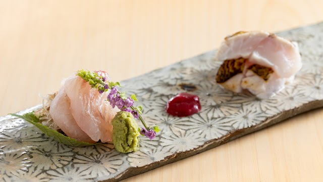
| 営業時間 | 月・火・木・金 18:00〜22:00 ／ 土・日 12:00〜15:00, 18:00〜23:00 |
|---|---|
| 定休日 | 水曜 |
| 住所 | 新潟県新潟市西蒲区巻甲２４４３ |
| 予約 | 可 — ☎ 0256-72-2859 ／ 公式サイト |
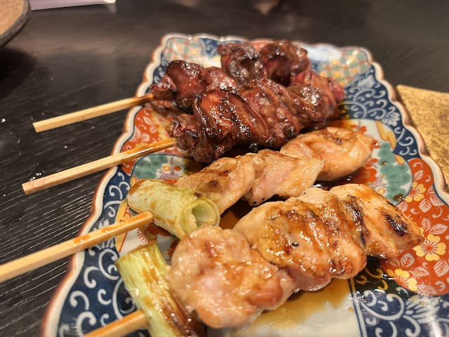
| 営業時間 | 月・火・水・木・日 11:30〜15:00, 17:00〜22:00 ／ 金・土 11:30〜15:00, 17:00〜23:00 |
|---|---|
| 定休日 | なし(要最終確認) |
| 住所 | 新潟県新潟市北区白新町２丁目１２−３ 鳥安 |
| 予約 | 可 — ☎ 025-387-5283 ／ 公式サイト |
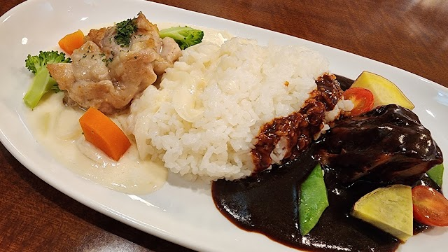
| 営業時間 | 月・火・水・木・金・土 11:30〜13:30, 17:00〜20:30 |
|---|---|
| 定休日 | 日曜 |
| 住所 | 新潟県新潟市中央区白山浦１丁目631番地 |
| 予約 | 可 — ☎ 025-266-1661 ／ 公式サイト |
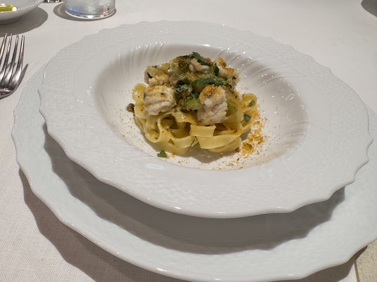
| 営業時間 | 月・木・金・土・日 12:00〜13:30, 18:00〜21:00 |
|---|---|
| 定休日 | 火・水曜 |
| 住所 | 新潟県新潟市中央区西大畑町５９１−１ 異人池ハウス |
| 予約 | 可 — ☎ 025-211-4994 ／ 公式サイト |
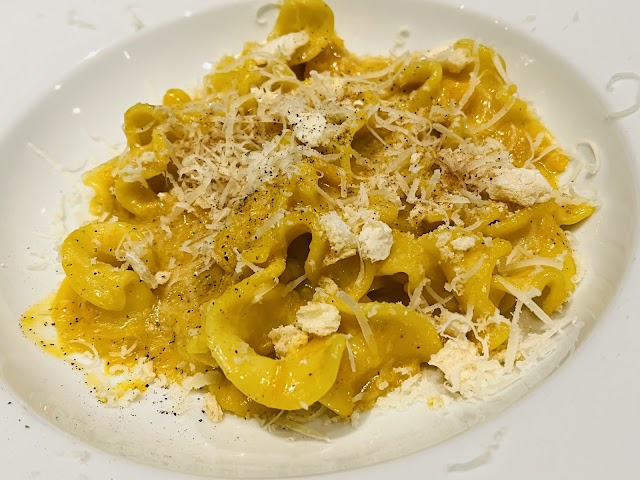
| 営業時間 | 月・火・水・木・金・土・日 11:30〜13:00, 18:00〜21:00 |
|---|---|
| 定休日 | なし(要最終確認) |
| 住所 | 新潟県新潟市中央区米山２丁目２−５ |
| 予約 | 可 — ☎ 025-369-4876 ／ 公式サイト |
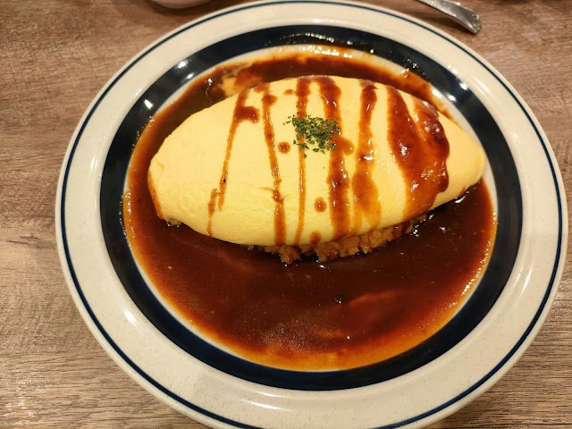
| 営業時間 | 月・木・金・土・日 11:30〜13:30, 18:00〜21:00 ／ 火 11:30〜13:30 |
|---|---|
| 定休日 | 水曜 |
| 住所 | 新潟県新潟市中央区八千代１丁目２−１０ |
| 予約 | 可 — ☎ 025-247-0967 ／ 公式サイト |
| 営業時間 | 月・水・木・金・土・日 11:00〜15:00, 17:00〜22:00 |
|---|---|
| 定休日 | 火曜 |
| 住所 | 新潟県新潟市中央区西厩島町２３３８−１ |
| 予約 | 可 — ☎ 025-222-6686 ／ 公式サイト |
| 営業時間 | 月・火・水・木・金・土・日 8:00〜19:00 |
|---|---|
| 定休日 | なし(要最終確認) |
| 住所 | 新潟県新潟市中央区万代１丁目６−１ 万代シテイバスセンタービル 1階 |
| 予約 | 要確認 — ☎ 025-246-6432 ／ 公式サイト |
| 営業時間 | 月・火・水・木・金・土・日 7:00〜10:00 |
|---|---|
| 定休日 | なし(要最終確認) |
| 住所 | 新潟県新潟市中央区万代１丁目３−３０ 万代シルバーホテルビル ４F |
| 予約 | 可 — ☎ 025-247-5728 ／ 公式サイト |
| 営業時間 | 水・日 11:30〜14:00 |
|---|---|
| 定休日 | 月・火・木・金・土曜 |
| 住所 | 新潟県新潟市東区山木戸６丁目１０−５ |
| 予約 | 要確認 — ☎ 025-271-6551 |
| 営業時間 | 月・木・金・土・日 11:00〜14:00, 17:00〜20:00 |
|---|---|
| 定休日 | 火・水曜 |
| 住所 | 新潟県新潟市江南区嘉木４−３ |
| 予約 | 可 — ☎ 050-8892-8800 ／ 公式サイト |
| 営業時間 | 月・火・水・金・土・日 11:30〜14:00, 17:00〜21:00 |
|---|---|
| 定休日 | 木曜 |
| 住所 | 新潟県新潟市秋葉区新津本町２丁目７−５ |
| 予約 | 可 — ☎ 0250-24-5316 |
| 営業時間 | 月・木・金・土・日 12:00〜15:00, 18:00〜22:00 |
|---|---|
| 定休日 | 火・水曜 |
| 住所 | 新潟県新潟市西蒲区岩室温泉６６６ |
| 予約 | 可 — ☎ 0256-78-8781 ／ 公式サイト |
| 営業時間 | 月・木・金・土・日 11:00〜14:30, 17:30〜20:30 ／ 火 11:00〜14:30 |
|---|---|
| 定休日 | 水曜 |
| 住所 | 新潟県新潟市北区東栄町２丁目１４−１０ |
| 予約 | 可 — ☎ 025-387-8080 ／ 公式サイト |
| 営業時間 | 月・火・水・金・土・日 9:30〜20:00 |
|---|---|
| 定休日 | 木曜 |
| 住所 | 新潟県新潟市中央区古町通６番町９５６ |
| 予約 | 要確認 — ☎ 025-229-1710 ／ 公式サイト |
| 営業時間 | 月・火・水・木・金・土・日 8:00〜18:00 |
|---|---|
| 定休日 | なし(要最終確認) |
| 住所 | 新潟県新潟市中央区古町通６番町９７８ 富士屋ビル |
| 予約 | 要確認 — ☎ 025-224-6581 |
| 営業時間 | 月・火・水・木・金・土・日 8:00〜17:00 |
|---|---|
| 定休日 | なし(要最終確認) |
| 住所 | 新潟県新潟市中央区西堀前通４番町７３９ |
| 予約 | 要確認 — ☎ 025-222-9822 ／ 公式サイト |
| 営業時間 | 月・火・水・木・金・土・日 9:00〜18:00 |
|---|---|
| 定休日 | なし(要最終確認) |
| 住所 | 新潟県新潟市中央区柳島町１丁目２−３ 田中屋本店みなと工房 |
| 予約 | 要確認 — ☎ 025-225-8822 ／ 公式サイト |
| 営業時間 | 月・火・水・木・金・土・日 8:00〜16:45 |
|---|---|
| 定休日 | なし(要最終確認) |
| 住所 | 新潟県新潟市江南区大渕１６３１番地５ |
| 予約 | 要確認 — ☎ 025-276-2141 ／ 公式サイト |
| 営業時間 | 月・火・水・木・金・土 9:30〜18:00 |
|---|---|
| 定休日 | 日曜 |
| 住所 | 新潟県新潟市秋葉区新津本町１丁目６−３０ |
| 予約 | 要確認 — ☎ 0250-22-0462 ／ 公式サイト |
| 営業時間 | 月・火・水・木・土・日 10:00〜16:00 |
|---|---|
| 定休日 | 金曜 |
| 住所 | 新潟県新潟市北区東栄町１丁目１−３５ |
| 予約 | 要確認 — ☎ 025-387-1123 |
| 営業時間 | 月・火・水・木・金・土・日 8:00〜18:30 |
|---|---|
| 定休日 | なし(要最終確認) |
| 住所 | 新潟県新潟市南区月潟１５４３−１ |
| 予約 | 要確認 — ☎ 025-375-2684 ／ 公式サイト |
| 営業時間 | 月・水・木・金・土・日 9:00〜18:00 |
|---|---|
| 定休日 | 火曜 |
| 住所 | 新潟県新潟市南区上下諏訪木９７６−１ |
| 予約 | 要確認 — ☎ 025-378-5139 ／ 公式サイト |
| 営業時間 | 月・火・木・金・土 9:00〜19:00 ／ 日 9:00〜18:00 |
|---|---|
| 定休日 | 水曜 |
| 住所 | 新潟県新潟市西区小針４丁目２６−２ |
| 予約 | 要確認 — ☎ 025-378-2957 ／ 公式サイト |
| 営業時間 | 月・水・木・金・土・日 10:00〜17:00 |
|---|---|
| 定休日 | 火曜 |
| 住所 | 新潟県新潟市西蒲区下山１３２０−１ |
| 予約 | 要確認 — ☎ 0256-78-7515 ／ 公式サイト |
本ガイドは個人利用目的で作成。掲載情報は2026年8月時点の調査に基づく。写真出典: Google Maps投稿写真(©各投稿者/Google)。